Préambule
TRJS est un logiciel de transcription, d'édition et de visualisation de données et de corpus de langage
oral.
Développé en Javascript, il reprend les fonctionnalités principales
de Transcriber
et de CLAN, préservant l'interopérabilité des formats.
Principes généraux
TRJS permet la transcription et l'alignement rapide d'un texte brut ne présentant pas d'alignement préalable mais correctement divisé en locuteurs, à partir d'un média vidéo ou audio.
TRJS est optimisé pour différents usages:
- une utilisation optionnelle de la souris et un contrôle complet depuis le clavier, qui ainsi permette une manipulation intuitive de la vidéo/du son.
- une utilisation classique avec la souris, avec la possibilité de découper les sons et images au préalable ou au fur et à mesure.
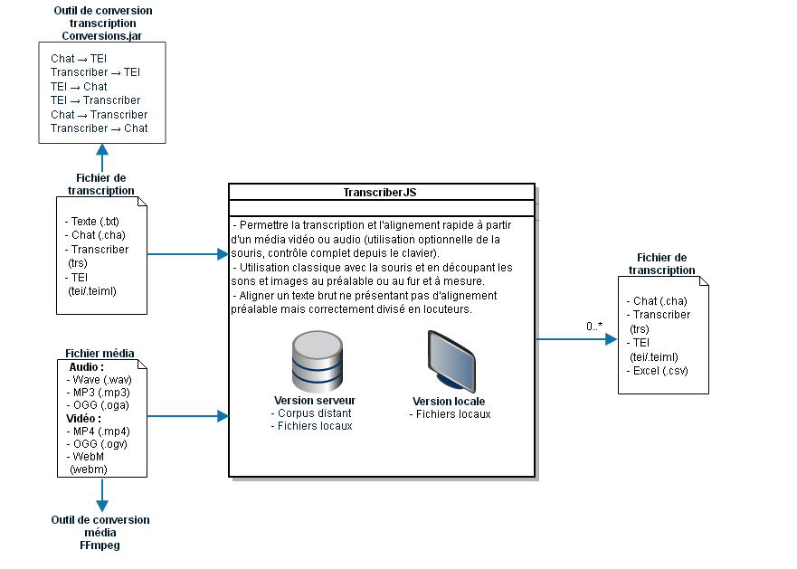
Premiers pas
Installation
Au préalable
Avant de procéder à l'installation de TRJS, veuillez vérifier avoir effectué les installations et mises à jour suivantes:
- Avoir une version de votre système d'exploitation compatible:
- Mac OS :
- version minimum 10.9 (Mavericks)
- et plus récentes
- Windows :
- Seven
- 8
- 10
- Autres systèmes :
- Linux: l'installation se fait à partir des sources.
Windows
- Cliquez sur le lien de téléchargement.
Choisissez la version de Windows désirée.
Vous pouvez Enregistrer le fichier. - Dans le dossier Téléchargements, vous trouverez le répertoire d'installation au format
exécutable,
nommé selon la version trjs-....exe.
Veuillez l'ouvrir pour lancer l'installation.
La fenêtre suivante apparaît: 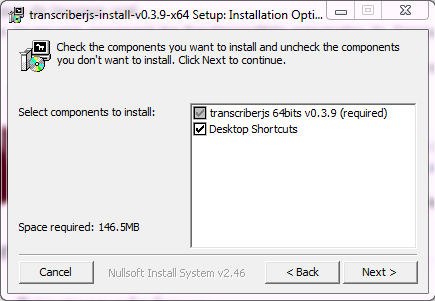 Il est conseillé de garder cochée la case Desktop Shortcuts afin de pouvoir lancer le logiciel directement depuis le Bureau (Desktop) via un raccourci. 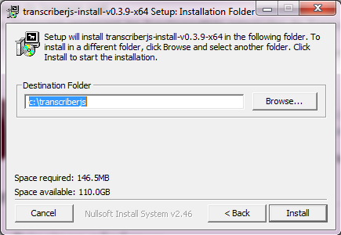 Le répertoire par défaut est trjs dans "Program Files ..."
- L'installation de TRJS est terminée. Vous pouvez fermer.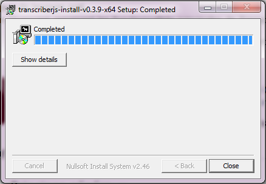
Mac OS X
Le téléchargement consiste en un fichier ZIP. Ce fichier peut être décompressé sur OSX, soit automatiquement, soit manuellement en faisant double-clic dessus(selon vos paramètres de navigateur). Une fois décompressée, l'application peut être déplacée où vous voulez, par exemple dans le dossier Applications, mais aussi dans un autre dossier.
Autres systèmes (Linux et sources)
Pour les systèmes Linux ou autres systèmes, installer à partir des sources et faire une installation séparée de Java (pour les outils d'export) et de FFMPEG pour visualiser le signal et utiliser les outils de conversion de fichier média.
Les sources sont disponibles ici: http://www.github.com/christopheparisse/trjs/ ou avec
git clone http://www.github.com/christopheparisse/trjs.gitAttention: cette installation nécessite des préalables. Notamment, l'installation séparée de Node.js, NPM, Java, FFMPEG et FFPASTE. Il faut aussi ajouter des bibliothèques systèmes si elles ne sont pas présentes: sudo apt-get install libxext-dev libxtst-dev libxkbfile-dev Il est donc possible de faire les commandes suivantes:
sudo apt-get update sudo apt-get install nodejs npm sudo apt-get install libxext-dev libxtst-dev libxkbfile-dev sudo apt-get install ffmpeg
Une fois l'archive décompressée ou récupérée avec git clone, aller dans le répertoire créé et faire:
npm install npm run gulpLe correcteur lexical doit être bien installé pour fonctionner et de fermer normalement le programme. Pour cela faire au moins une fois:
npm run rebuildPour lancer le programme une fois installé, il suffit de faire:
npm run electronLancer la commande sh buildlinux.sh va créer un répertoire nommé release qui contient un répertoire nommé Trjs-linux-x64
. Ce dernier répertoire peut être déplacé et renommé. Il contient la command exécutable et tous les paramètres. Il suffit de lancer le fichier de nom "Trjs" dans ce dossier pour lancer TRJS. Si le Trjs-linux-x64 est déplacé, le répertoire contenant les sources peut être effacé. Sinon il peut être conservé pour les mises à jour futures. Pour ce faire, remplacer git clone par la commande git pull origin et répéter le processus.
Lancement
Il suffit de faire double-clic sur l'icone du programme.
Il est possible d'associer le programme à un type de fichier. Dans ce cas, il est conseillé d'utiliser l'extension .trjs pour les noms de fichiers pour éviter la confusion avec les fichiers d'extension .xml. L'utilisation de l'extension .xml ou .tei_corpo.xml reste tout à fait autorisée.
Interface
Organisation de l'écran d'édition
La fenêtre principale du programme TRJS se divise en six parties :
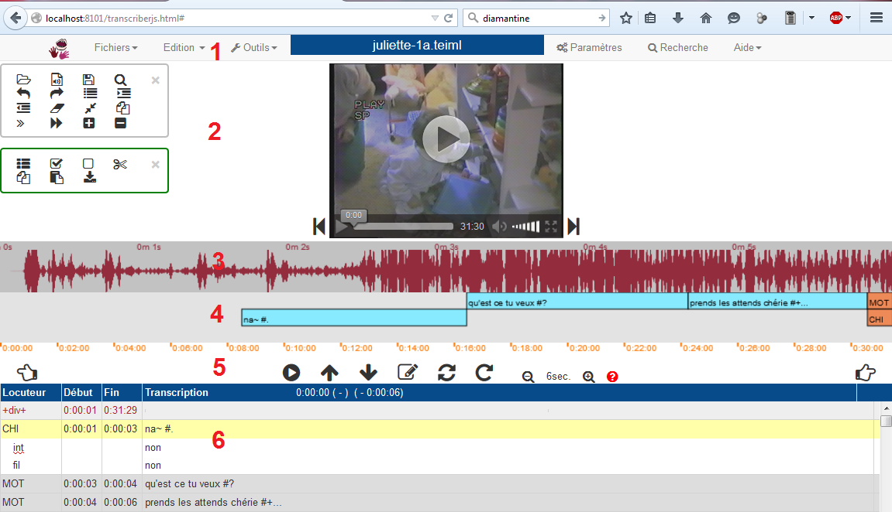
- La barre d'accès aux menus, paramètres et fonctions annexes
- Le champ média contenant la vidéo et/ou l'audio, encadré des barres d'outils.
- Le signal, représentation sonore du média.
- La partition, représentation horizontale de la transcription, associée à un slider.
- Les commandes média, boutons de lecture et d'édition de la transcription.
- La transcription représentée sous forme de tableau.
Pour un usage simplifié, le signal et la partition sont des parties qui peuvent être affichées ou masquées,
de même que les barres d'outils dans le champ média.
(cf. Onglet Affichage dans la fenêtre Paramètres, menu
Il est possible d'agrandir la taille de la fenêtre (ou de la rétrécir) en utilisant la fonction zoom du navigateur.
Accès menus, paramètres et fonctions annexes
La barre de menu est composée d'encarts cliquables :
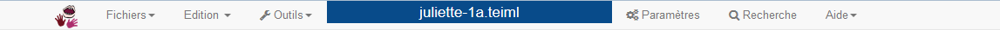
L'onglet
L'onglet
L'onglet
L'onglet
L'onglet
Descriptif des icônes
| Icône | Fonction | Raccourci clavier | Localisation |
|---|---|---|---|
| Ouvrir une transcription, pour ouvrir une transcription existante | Ctrl O | Onglet |
|
| Choisir un média, parmi un média existant | Ctrl Alt O | Onglet |
|
| Nouvelle transcription, pour créer une transcription | Onglet |
||
| La liste des derniers fichiers ouverts, les derniers fichiers que vous avez modifiés peuvent être rappelés | Onglet |
||
| Enregistrer, pour sauvegarder votre travail existant | Ctrl S | Onglet |
|
| Enregistrer sous... pour une sauvegarde dans votre environnement de travail | Onglet |
||
| Sauver dans le cache, afin de retrouver votre travail via votre navigateur | Onglet |
||
| Import, pour importer une transcription/un média en local | Onglet |
||
| Métadonnées, déploiement d'un panneau de renseignement des métadonnées du fichier courant. | Onglet |
||
| Participants, pour l'édition du nom et des caractéristiques concernant les locuteurs du fichier courant | Onglet |
||
| Structure, pour l'édition des champs dépendants de la ligne principale | Onglet |
||
| Afficher ou cacher la sélection multiple, pour pouvoir délimiter une sélection | Ctrl Alt F8 | Onglet |
|
| Sélectionner tout | Onglet |
||
| Désélectionner tout | Onglet |
||
| Couper la sélection | Onglet |
||
| Copier la sélection | Onglet |
||
| Coller la sélection | Onglet |
||
| Annuler la dernière action | Ctrl Z | Onglet |
|
| Liste des annulations, pour consulter les annulations possibles | Onglet |
||
| Reproduire la dernière annulation | Ctrl Y | Onglet |
|
| Vérifier la transcription, pour consulter les erreurs de format par rapport au standard défini TEIML | Onglet |
||
| Décaler tous les repères temporels, pour réajuster un éventuel décalage avec le fichier média | Onglet |
||
| Convertir un média | Onglet |
||
| Export, du fichier ou de la sélection, avec plusieurs formats proposés | Onglet |
||
| Paramètres, pour ajuster les paramètres de langue, d'affichage, d'édition etc. | Onglet |
||
| Recherche,pour rechercher, remplacer, se déplacer rapidement dans le fichier de transcription | Ctrl F | Onglet |
|
| Aide rapide, petite mémo avec schéma décrivant le fonctionnement de l'outil | Onglet |
||
| Aide complète, accès au site de documentation | Onglet |
||
| Liste des fonctions du clavier, avec la correspondance des raccourcis claviers avec leur fonction ou caractère API correspondant | Onglet |
||
| Mise à jour du logiciel | Onglet |
||
| Messages | Onglet |
||
| Réinitialiser tous les messages d'aide | Onglet |
||
| A propos de TRJS, crédits | Onglet |
Menu Fichiers
En cliquant sur le menu
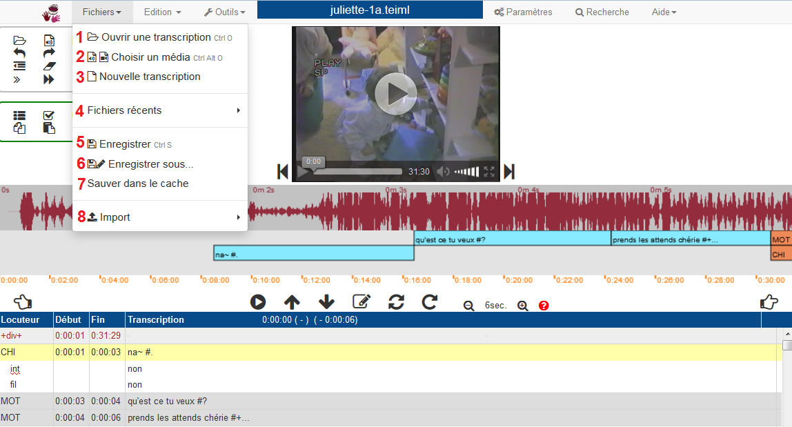
- Ouvrir une transcription, pour ouvrir une trancription existante.
- Choisir un média, parmi un média existant.
- Nouvelle transcription, pour créer une transcription.
- La liste des derniers fichiers ouverts, les derniers fichiers que vous avez modifiés peuvent être rappelés.
- Enregistrer, pour sauvegarder votre travail existant.
- Enregistrer sous... pour une sauvegarde dans votre environnement de travail.
- Sauver dans le cache, afin de retrouver votre travail via votre navigateur.
- Import, pour importer une transcription/un média en local.
- Export, un outil pour exporter son travail vers plusieurs formats cibles.
Menu Edition
En cliquant sur le menu
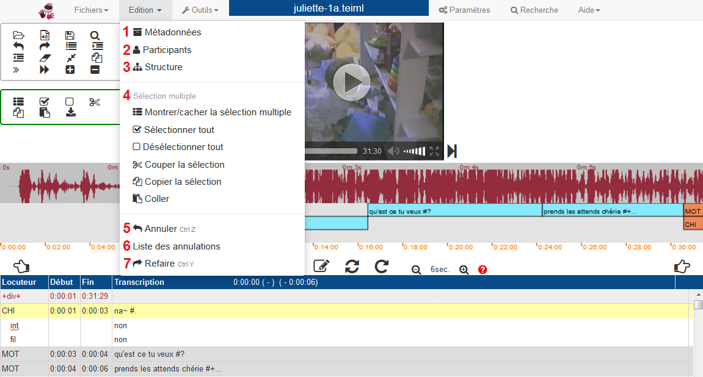
- Métadonnées, déploiement d'un panneau de renseignement des métadonnées du fichier courant.
- Participants, pour l'édition du nom et des caractéristiques concernant les locuteurs du fichier courant.
- Structures, pour l'édition des champs dépendants de la ligne principale.
- Les options d'édition pour la sélection multiple, sélection définie par le transcripteur d'un ou plusieurs extrait(s) de la transcription globale :
- Afficher ou cacher la sélection multiple
- Sélectionner ou désélectionner la sélection multiple
- Couper la sélection
- Copier la sélection
- Coller
- Annuler, l'action précédente.
- Liste des annulations, déploie une fenêtre qui liste l'historique des dernières actions réalisées. Ainsi, il est possible de revenir à l'étape précédente.
- Refaire, la dernière action annulée.
2.2.4. Menu Outils
Plusieurs outils sont proposés par TRJS,
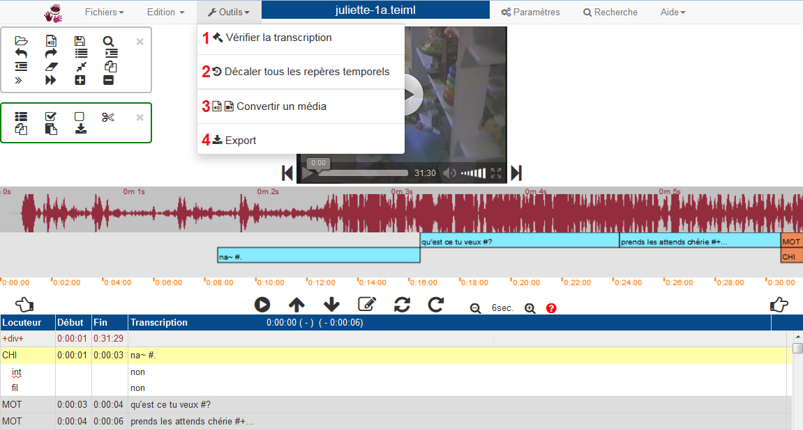
- L'accès aux paramètres : (une fenêtre se déploie, elle contient plusieurs encarts aux fonctionnalités thématiques.)
- Une vérification de la transcription
- Un décalage des repères temporels
- Un outil de conversion
2.2.5. Encart Nom du fichier
En cliquant sur le nom du fichier (en bleu, au milieu, en haut de l'écran), le panneau Métadonnées s'ouvre directement.

2.2.6. Menu Recherche
Une fenêtre s'ouvre, avec 4 encarts:
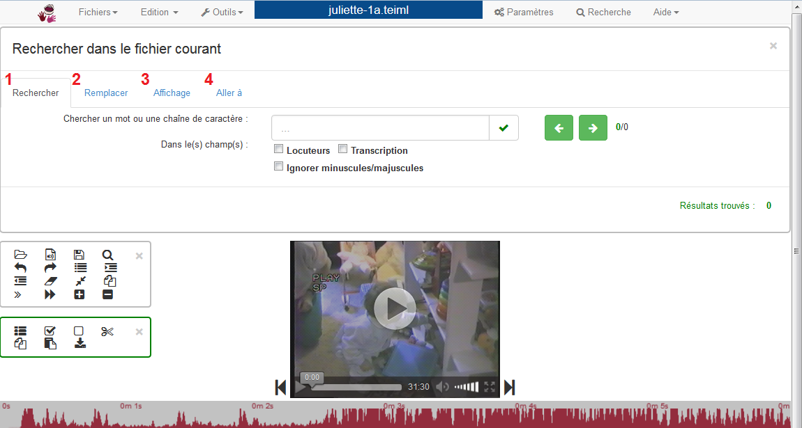
2.2.7. Menu Aide
En cliquant sur le menu

- Aide rapide
- Aide complète (site : http://ct3.ortolang.fr/TRJS/doku.php)
- Liste des fonctions du clavier - Mémo rapide des Raccourcis claviers et leurs fonctions
- Mise à jour du logiciel
- Message - Historique des messages affichés
- A propos de TRJS - Informations complémentaires et droits
2.3. Champ média
Le champ média contient la vidéo et/ou l'audio.
La barre de lecture est propre au média (et dépendante du navigateur utilisé),
elle apparaît lorsqu'on passe le curseur sur le média, puis disparaît après 3 secondes.
Elle offre les options suivantes :
- Revenir en arrière (3 secondes par défaut : valeur modifiable dans le menu
PARAMETRES ) ou raccourci clavier : Alt ← (ou F2) - Lecture simple/pause
- Barre de déplacement horizontal dans le média, avec position indiquée en hh:mm:ss
- Affichage du temps complet du média
- Volume (option muet)
- Plein écran ou raccourci clavier : ESC pour revenir à une taille miniature
- Sauter en avant ou raccourci clavier : Alt → (ou F3)
Le média est encadré par des barres d'outils (8).
Il existe des raccourcis clavier (cf. Barres d'outils) pour :
- Agrandir la taille de la vidéo : Alt F3 et
- Rétrécir la taille de la vidéo : Alt F2.
Concernant les liens entre média et transcription :
- La zone média est en mode standard par défaut.
- En mode bloqué, elle positionne la transcription.
- Des raccourcis clavier sont ajoutés pour lancer directement la synchronisation en mode bloqué entre média et transcription :
- Lecture de la ligne courante : F7
- Lecture continue (à partir de la ligne courante) : F8
Pour plus de détails, consulter les fonctions de lecture et barres d'outils.
2.4. Signal
Le signal est une représentation sonore du média dans son intensité (densité d'énergie acoustique) en fonction du temps en secondes et de la fréquence en Hertz.
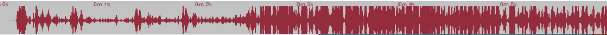
- Cette zone permet la sélection d'une partie avec la souris. Cette sélection ne positionne pas la transcription ni la partition (c'est-à-dire sans décalage avec la transcription).
- La partie grisée correspond à la ligne courante dans la partie transcription.
Concernant les liens entre signal et transcription :
- On peut transmettre le temps courant à la transcription (n'existe qu'en mode standard et libre).
- En mode bloqué, la sélection positionne la transcription.
2.5. Partition
La partition est une représentation horizontale de la transcription (verticale) qui permet de visualiser intuitivement les chevauchements des tours de parole des locuteurs.
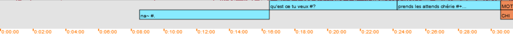2.5.1. Visualisation
Les encarts qui s’affichent en vert sont les encarts sélectionnés ou en cours de lecture.
- Un facteur de zoom permet de déterminer combien de secondes sont représentées en largeur. Le facteur temporel de cette zone est le même que celui du wave (mais les deux peuvent être décalés).
- Un clic sur cette zone positionne le temps du média (sauf en mode libre).
- Ce clic positionne également la transcription si le clic est sur une zone dont on peut déterminer la position dans la transcription (pas toujours possible pour les parties du texte non-alignées).
2.5.2. Slider partition
La barre jaune (située en-dessous de la partition) est la barre de défilement horizontal de la partition :
- Cette zone fournit une vue horizontale de l'ensemble du texte.
- Les repères temporels facilitent la navigation.
- La partie jaune indique l'endroit où l'on se situe dans la transcription.
- Un clic à n% de la zone positionne le média à n% de sa durée totale.
- Le positionnement sur le slider positionne le média, sauf en mode libre.
2.6. Boutons média
Autour du champ média (audio ou vidéo) sont déployés des boutons, associés à des raccourcis claviers.
Lorsqu'on passe la souris sur une icône, une bulle d'information apparaît pour rappeler la fonction principale de l'icône, ainsi que son raccourci clavier associé.
| Icône | Raccourci clavier | Fonctionnalité |
|---|---|---|
| Play/Pause : lecture simple (à partir de l'endroit où le curseur est situé) /!\ Cette fonction de lecture ne déplace pas le curseur positionné dans le tableau de transcription. |
||
| Set start : insertion dans la transcription du temps de début d'un segment à transcrire (à l'endroit où le curseur est situé dans le tableau de transcription) | ||
| Set end : insertion dans la transcription du temps de fin | ||
| Insert : insertion d'une ligne vide sous un locuteur dans la transcription | ||
| Repeat : lecture de la ligne courante (où se situe le curseur dans la transcription) | ||
| Go continuous : lecture continue (à partir de l'endroit où se situe le curseur) | ||
| 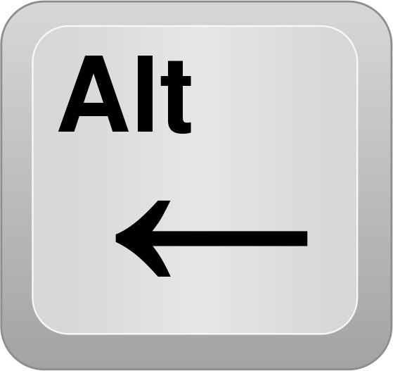 | Backward : recule (déplacement de une image, de une seconde, à l'extrémité de la partition) | |
| 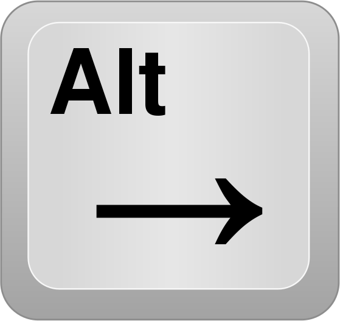 | Forward : avance | |
| Zoom : L'option zoom permet d'agrandir ou de rétrécir la visualisation du signal et de la partition et ce jusqu'à 2,6 secondes. |
2.7. Transcription
La transcription orthographique du signal est éditée sous forme de tableau déroulable
(la barre de défilement vertical se trouve sur la droite).
Le tableau de transcription est une visualisation verticale éditable du texte.
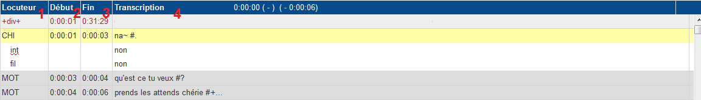
Le tableau de trancription est divisé en quatre colonnes :
- Locuteur - Ce champ renseigne l'identifiant du locuteur ou l'identifiant de la structure de ligne (dépendante du locuteur).
- Chaque nouveau locuteur doit être renseigné dans le tableau des participants
- Chaque nouvelle valeur de structure doit être renseignée dans le tableau des structures
- Visuellement, les structures supplémentaires s’imbriquent sous le locuteur (qui est la ligne principale par défaut)
- Début - le temps de début d'une ligne de transcription et
- Fin - le temps de fin
- Un clic permet d'obtenir le temps en millisecondes (par défaut)
- L'affichage du nombre et du format pour les millisecondes est modifiable dans le menu
PARAMETRES . - Transcription - la partie texte éditable
- Les nuances de gris sur les lignes correspondent aux locuteurs, il y a 3 nuances du gris foncé au blanc: plus le gris est foncé, plus la fréquence du temps de parole du locuteur est élevée.
- La ligne sélectionnée ou en cours de lecture est surlignée en jaune (en jaune clair pour une ligne dépendante)
Le positionnement sur une zone transcrite positionne la partition (si possible c'est à dire si la transcription est liée temporellement) et le temps du média (sauf en mode libre pour le média).
2.8. Barres d'outils
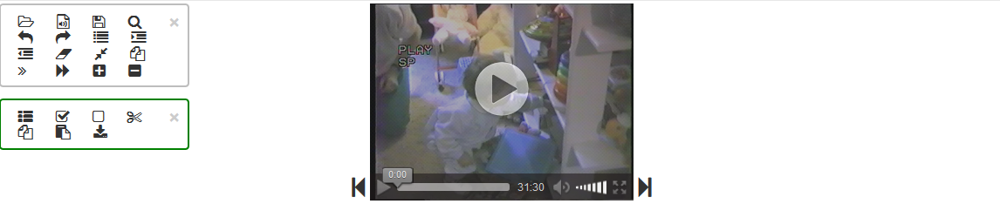Les barres d'outils permettent d'accéder très rapidement aux principales commandes d'édition.
Chaque icône est également définie par un raccourci clavier,
qui s'affiche au moyen d'une infobulle lorsqu'on passe la souris par dessus.
On peut rétrécir ou déplacer les barres d'outils.
Chacune des barres d'outils a une portée différente :
- Barre d'outil grise : renvoie aux principales commandes d'édition de la transcription
- Barre d'outil verte : concerne seulement les options d'édition de la sélection multiple
| Icône | Raccourci clavier | Fonctionnalité |
|---|---|---|
| Ctrl O | Ouvrir un fichier de transcription | |
| Ctrl Alt O | Choisir un média | |
| Ctrl S | Sauvegarder | |
| Ctrl F | Faire une recherche | |
| Ctrl Z | Annuler | |
| Ctrl Y | Refaire | |
| Ctrl I | Insérer une ligne vide | |
| Ctrl Alt I | Insérer une ligne vide avec les temps | |
| Ctrl M | Modifier les temps (fin de ligne courante, début de ligne suivante) | |
| Ctrl D | Supprimer la ligne | |
| Ctrl J | Joindre la ligne courante et la suivante | |
| Ctrl R | Dupliquer la ligne | |
| Ctrl B | Lecture ralentie | |
| Ctrl E | Lecture accélérée | |
| Alt F3 | Agrandir la taille de la vidéo | |
| Alt F2 | Rétrécir la taille de la vidéo | |
| Ctrl Alt F8 | Montrer/cacher la sélection multiple | |
| Sélectionner tout | ||
| Désélectionner tout | ||
| Couper la sélection | ||
| Copier la sélection | ||
| Coller la sélection | ||
| Télécharger la sélection |
Fichier de transcription
3.1. Créer une nouvelle transcription
Dans le menu
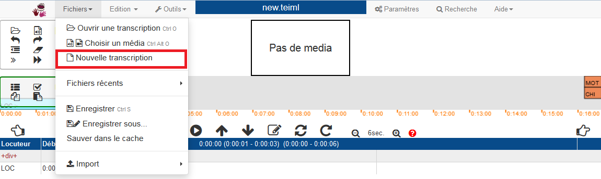
Si le média n'est pas ouvert, voir Ouvrir un média, puis vous pouvez commencer la transcription.
La partie transcription est désormais éditable à l'endroit indiqué.
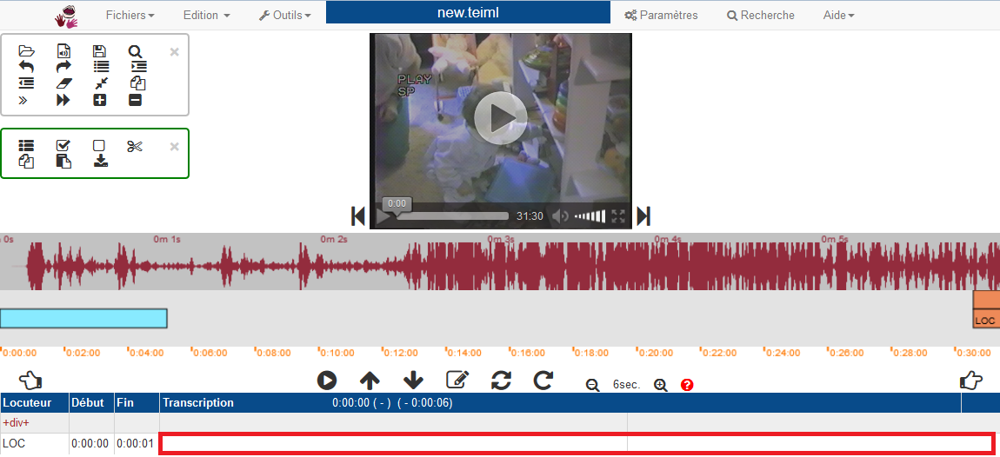3.2. Ouvrir une transcription
Il y a deux possibilité d'ouverture d'une transcription :
- Ouvrir une transcription sur le serveur :
- Un serveur est installé sur une machine visible par Internet. L'utilisateur n'accéde seulement aux fichiers qui lui sont autoriséspar le serveur distant.
- La version distante ne nécessite aucune installation préalable, mais nécessite de disposer d'une connexion Internet. L'usage des médias sons et surtout vidéos peut dépendre de la qualité et la vitesse de la connexion Internet.
- La version distante permet d'éditer des fichiers locaux (transcriptions et médias) avec des limitations dues à la sécurité des versions actuelles des navigateurs (lecture séparée de la transcription et du média, sauvegarde uniquement dans le répertoire Téléchargements).
- Importer une transcription locale :
- Un serveur est installé sur la machine de l'utilisateur et permet d'accéder à l'ensemble de ses fichiers.
- La version locale dispose aussi des fonctionnalités de la version distante. Il suffit de choisir un fournisseur de corpus distant pour passer en version distante.
Attention : En cas d'ouverture simultanée du même fichier plusieurs fois, il n'y a pas de contrôle entre les versions: ainsi, seule la dernière sauvegarde sera prise en compte.
3.2.1. Ouvrir une transcription sur le serveur
Dans le menu
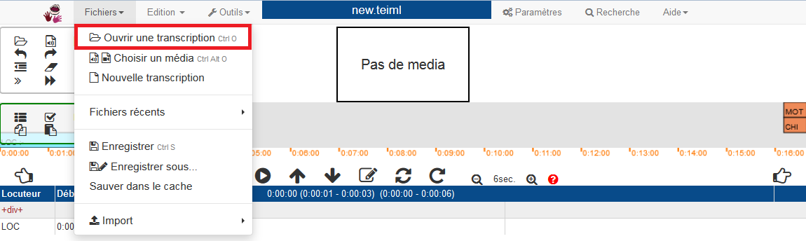
Une fenêtre s'ouvre :
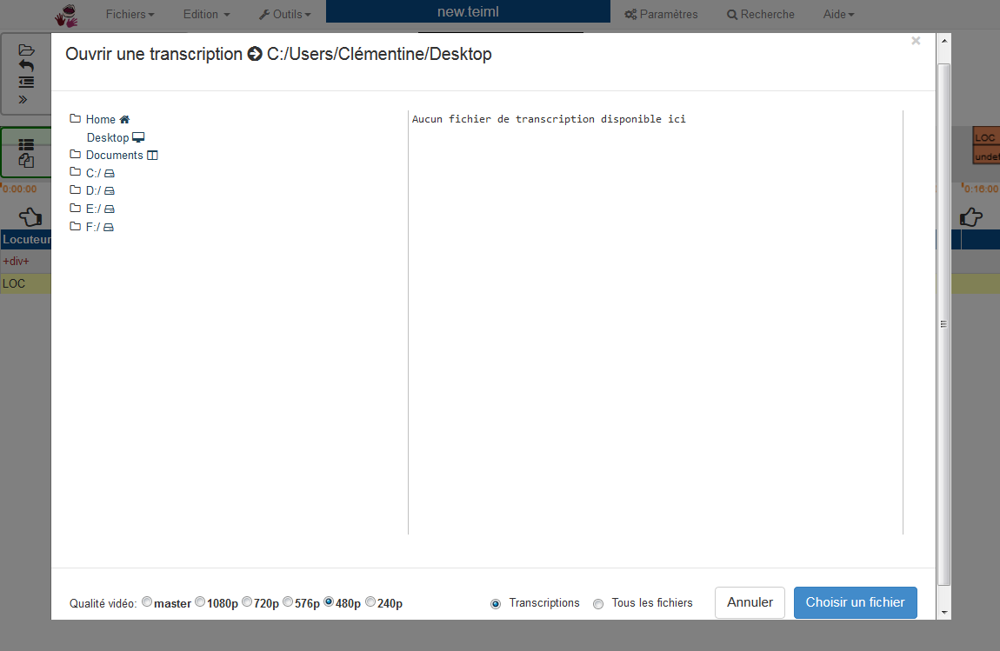
- A gauche, l'arborescence de l'ordinateur permet de naviguer dans les répertoires (double-clic pour ouvrir un dossier)
- A droite, visualisation du contenu d'un répertoire : seulement les fichiers s'affichent
- En bas à droite, sélection seule des fichiers de transcription, ou toutes les extensions de fichiers à visualiser. (Voir Formats de la transcription.)
La transcription est chargée, mais vous n'avez pas de fichier média, comme indiqué.
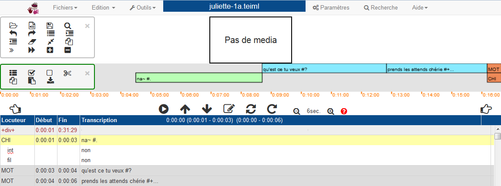
3.2.2. Importer une transcription locale
Dans le menu
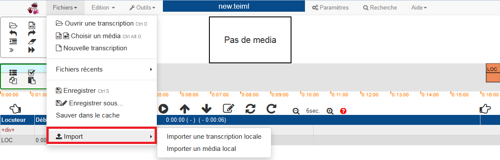
Vous pouvez naviguez dans votre arborescence classique pour charger un fichier.
3.3. Formats de transcription
TRJS accepte les formats de transcription suivants :
- Texte (.txt)
- Chat/CLAN (.cha) - format CHILDES, logiciel CLAN
- Transcriber (.trs) - logiciel Transcriber
- Praat (.textgrid) - logiciel Praat
- TEI (.tei ou .teiml) (Pour plus de précisions, cf. Format TEI).
3.4. Conversion des transcriptions
Un outil de conversion de formats est téléchargeable :
teicorpo.jar
Il permet la conversion de fichiers CLAN/Chat, Transcriber et Praat vers le format TEIML et inversement.
Pour en savoir davantage à propos du format TEIML :
Cet outil permet donc pour le moment 7 types de conversions :
- Chat (.cha) → TEI (.teiml)
- Transcriber (.trs) → TEI
- Praat (.textgrid) → TEI
- TEI → Chat
- TEI → Transcriber
- Chat → Transcriber
- Transcriber → Chat
Attention : Il faut avoir installé Java sur son ordinateur.
L'outil est en Java et à utiliser tel que si vous avez installé Java sur votre ordinateur
(cf. Télécharger Java).
Utilisation de l'outil de conversion
Soit l'outil est à utiliser directement depuis le Finder ou Bureau (faire double clic sur le nom de fichier).
Soit l'outil est utilisable en ligne de commande. Les commandes à exécuter sont :
- Chat → TEIML :
- Transcriber → TEIML :
- Praat → TEIML :
- TEIML → Chat :
- TEIML → Transcriber :
java -cp teicorpo.jar fr.ortolang.tools.imports.ChatToTEI
java -cp teicorpo.jar fr.ortolang.tools.imports.TranscriberToTEI
java -cp teicorpo.jar fr.ortolang.tools.imports.PraatToTEI
java -cp teicorpo.jar fr.ortolang.tools.imports.TeiToChat
java -cp teicorpo.jar fr.ortolang.tools.imports.TeiToTranscriber
L'outil conversion de formats (TEIML, CHAT/CLAN, Transcriber, Praat) peut être téléchargé ici :
Conversion.jar
3.5. Enregistrer la transcription
Vous pouvez à tout moment sauvegarder la transcription en cours :
- avec le raccourci clavier Ctrl + S
- avec l'icône situé dans la barre d'outils
- ou en accédant dans le menu
FICHIERS à l'encart Enregistrer.
Vous pouvez définir ou modifier l'emplacement de votre fichier de transcription
en accédant à l'encart Enregistrer sous... du menu
Fichier média
4.1. Ouvrir un média
Dans le menu
Une fenêtre s'ouvre :
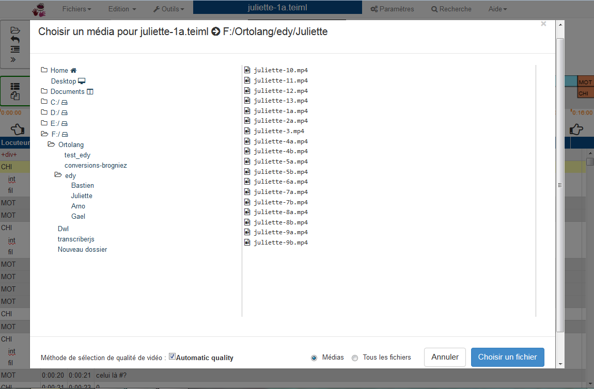
- A gauche, l'arborescence de l'ordinateur permet de naviguer dans les répertoires (double-clic pour ouvrir un dossier)
- A droite, visualisation du contenu d'un répertoire : seulement les fichiers s'affichent
- En bas à droite, sélection seule des fichiers média, ou toutes les extensions de fichiers à visualiser. (Voir Formats de la transcription.)
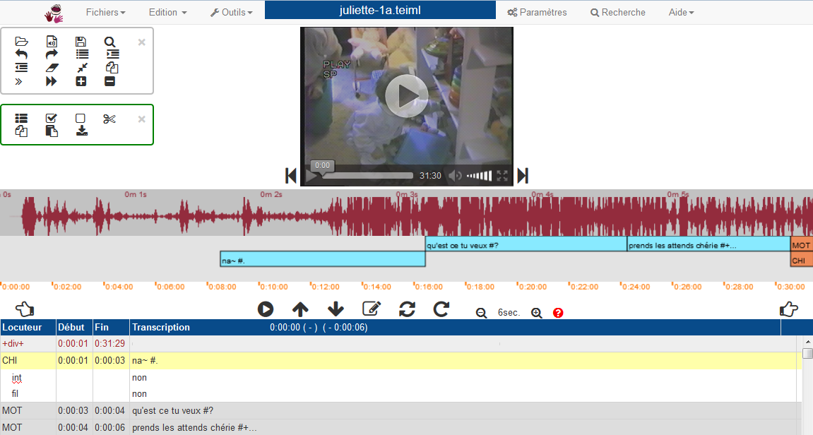
Si tout s'est déroulé sans encombre, le média est chargé.
Sinon, un message d'erreur vous avertit d'un éventuel problème de compatibilité avec le format média.
4.2. Formats média
TRJS est compatible directement avec les formats :
- Audio :
- Wave (.wav)
- MP3 (.mp3)
- OGG (.oga)
- Vidéo :
- MP4 (.mp4)
- OGG (.ogv)
- WebM (.webm)
Les autres formats de média sons/vidéos sont utilisables après conversion par l'outil FFMPEG. (Voir page Conversions media).
4.2.1. Correspondances des formats média reconnus par TRJS dans les navigateurs
| Navigateur Format |
Google Chrome | Opera / Safari | Internet Explorer | |
|---|---|---|---|---|
| MP4 (.mp4) | ||||
| OGG (.ogv) | ||||
| WebM (.webm) |
4.2.2. Correspondance des formats média avec d'autres logiciels de transcription
Correspondance des formats audio
| Logiciel Format |
TRJS | Transcriber | CLAN | ELAN | Praat |
|---|---|---|---|---|---|
| Wave (.wav) | |||||
| MP3 (.mp3) | |||||
| OGG (.oga) | - | - | - | - |
Correspondance des formats vidéo
| Logiciel Format |
TRJS | Transcriber | CLAN | ELAN | Praat |
|---|---|---|---|---|---|
| MP4 (.mp4) | - | - | |||
| OGG (.ogv) | - | - | - | ||
| WebM (.webm) | - | - | - | ||
| MOV (.mov) | via FFmpeg | - | |||
| MPEG (.mpeg) | via FFmpeg | - | |||
| AVI (.avi) | via FFmpeg | - | - | - |
4.3. Conversion des médias
Les autres formats de média sons/vidéos sont utilisables après conversion par l'outil FFMPEG.
FFMPEG est un logiciel de lecture et encodage de vidéo qui assure en ligne de commande la possibilité de convertir
les fichiers vidéo d'un format à un autre.
Conversions des formats média réalisées par TRJS (via FFmpeg)
- Vidéo moyenne : vers vidéo pour HTML5 taille moyenne
- Petite vidéo : vers vidéo pour HTML5 petite taille
- Grand MP4 : vers vidéo MP4 grande taille
- Grand OGV : vers vidéo OGV grande taille
- MPEG moyen : vers vidéo MPEG (Quicktime) taille moyenne
- MOV moyen : vers vidéo MOV (Quicktime) taille moyenne
- Grand MOV : vers vidéo MOV (Quicktime) grande taille
- Vers audio : transforme la vidéo en un fichier WAV et un fichier MP3
Outil de conversion média
Dans le menu
- Petit format
- Moyen format
- Grand format
- Audio seul
Gestion du média
5.1. Fonctions de lecture
Plusieurs commandes et boutons de lecture du média sont disponibles, chacun a des fonctionnalités et des champs d'actions spécifiques :
| Icône ou raccourci clavier | Fonctionnalité | Description |
|---|---|---|
| TAB | Lecture à partir du début de la ligne courante, pause | |
| F1 | Lecture simple, pause | correspond au bouton média masqué, apparaît lorsqu'on passe le curseur sur le média - fonction totalement indépendante de la transcription |
| Shift + F1 | Lecture à partir du média, pause | |
| Alt + F1 | Lecture à partir de la transcription (endroit où le curseur est situé), pause | |
| Shift + TAB | Lecture à partir du début de la ligne courante | permet de relire en boucle à partir du même endroit |
| F7 | Lecture de la ligne courante | segment temporel seulement |
| Alt F7 | Lecture de 3 lignes autour de la ligne courante | permet d'isoler un contexte |
| F8 | Lecture continue à partir de la ligne courante |
5.2. Sélection du signal
Il est possible de réajuster manuellement le temps d'une ligne de la transcription à partir du signal :
- Dans un premier temps, sélectionner dans la transcription/dans la partition la ligne que l'on veut
modifier.
Elle s'affiche en vert dans les parties partition et signal. - Ensuite se positionner sur le signal et sélectionner à l'aide d'un clic enfoncé la nouvelle partie temporelle, elle s'affiche en bleu.
- Une fois la nouvelle délimitation sélectionnée, faire Shift + clic.


Le temps de la ligne de transcription est réajusté, et la visualisation de la ligne dans la partie partition aussi.

Edition de la transcription
6.1. Edition des métadonnées
Un clic sur le nom du fichier (encart bleu) situé en haut, dans la barre de menu, permet d'éditer les métadonnées.
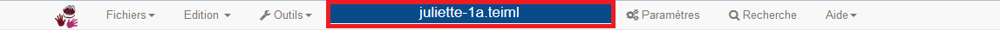On accède également au tableau d'édition des métadonnées en passant par le menu
Le tableau s'affiche pour l'édition, et se ferme à l'aide de la croix grise située en haut à droite.
Chaque ligne éditée du tableau s'enregistre automatiquement.
Seules les parties grisées sont éditables.
Ces champs permettent de rentrer les informations générales sur le document y compris sur les noms de fichiers,
mais aussi de rentrer les informations sur les champs métadonnées
Dublin-Core.
Pour obtenir des informations supplémentaires, passez votre souris sur la partie Information située à droite
du tableau,
une infobulle apparaît.
Tous les champs du tableau sont divisés en quatre parties :
- Type - catégorie du champ
- Property - nom du champ
- Value - valeur du champ
- Info - champ libre
Les premières lignes contiennent des informations générales (Transcription) :
- Title
- Recording
- Name - nom du fichier transcription (l'édition de ce champ permet de renommer le fichier)
- Loc - nom du répertoire du fichier transcription
- Date - date de l'enregistrement
- PlaceName - lieu où s'est effectué l'enregistrement
- Media
- Name - nom du fichier média
- RelLoc - nom du répertoire du fichier média relativement au répertoire de la transcription
- Loc - nom du répertoire du fichier média
- Type - type de média (audio ou vidéo)
- Duration - durée
Les lignes suivantes contiennent tous les champs à remplir du format Dublin core.
Les derniers champs contiennent des notes et commentaires ayant une portée sur l'ensemble du document :
- Notes - liste de champs libres
Pour se déplacer :
- dans la colonne de droite, presser TAB
- vers la gauche, faire Shift + TAB
6.2. Edition des locuteurs
6.2.1. Edition directe des locuteurs et autres tiers
Un clic droit sur le locuteur (colonne de droite) dans le tableau de transcription, permet de choisir le nom du locuteur ou la valeur de la tier à définir pour la ligne courante.

Une fois le clic droit activé dans le champ Locuteur (Locutor), un encart s'affiche proposant :
- à gauche, les valeurs de la catégorie Participant (Person) - ici, nous avons 3 locuteurs : CHI, MOT et OBS
- à droite, les valeurs de la catégorie Structure (Template)
- il est possible d'ouvrir une division (+div+), de la fermer (-div-), de coder un incident (+incident+) ou une pause (+pause+)
- Cancel ferme l'onglet
Ces valeurs sont des raccourcis vers les valeurs autorisées dans les entêtes de fichier,
renseignées au préalable.
Si le code choisi n'est pas défini dans les noms de personnes ou tiers autorisés,
le logiciel vous demande de changer la valeur et insère la valeur neutre "---".
Voir Paramètres d'édition des locuteurs pour insérer ou modifier les valeurs.
6.2.2. Edition des locuteurs et autres tiers par raccourci clavier
Il est également possible d'inscrire directement un locuteur ou une tier enregistré au préalable à l'aide d'un raccourci clavier :
| Raccourcis clavier | Codage direct du locuteur |
|---|---|
| Ctrl + 1 | premier locuteur |
| Ctrl + 2 | deuxième locuteur |
| ... | ... |
| Ctrl + 9 | neuvième locuteur |
| Codage direct du tier (champ décrivant un énoncé) | |
| Ctrl + Alt + 1 | première propriété des templates (tiers secondaires) |
| Ctrl + Alt + 2 | deuxième propriété |
| ... | ... |
| Ctrl + Alt + 9 | neuvième propriété |
Voir Paramètres d'édition des locuteurs pour insérer ou modifier les valeurs.
6.2.3. Paramètres d'édition des locuteurs (participants)
Les locuteurs peuvent être repérés par le code (dans la transcription) et ID (pour tout un corpus). Tout un ensemble de champs complémentaires est disponible pour fournir des informations sur un locuteur.
- Code - code utilisé dans la transcription (peut correspondre au rôle)
- ID - identificateur unique à travers tous les corpus
- Name - nom réel (ou pseudo pour anonymisation) de la personne
- Age - âge
- Role - rôle joué dans l'enregistrement
- Sex - sexe (F ou M)
- Lang - langue
- Group - groupe
- SES - éducation
- Source - nom du corpus où les locuteurs interviennent
- Info - champ à format libre
6.3. Edition des valeurs temporelles
6.3.1. Edition directe des valeurs temporelles
Dans le tableau de transcription,
il est possible d'éditer les valeurs temporelles de début et de fin en double cliquant sur la valeur à modifier.
Un simple clic permet de visualiser le nombre de millisecondes.
6.3.2. Paramètres d'édition des valeurs temporelles
Il est possible de paramétrer le format d'affichage des données temporelles dans le menu
- hms - segmentation lettrée
- 00:00 - n'affiche pas les heures
- h:00:00 - indique explicitement le nombre d'heures
- 00:00:00 - par défaut
Le chiffre de millisecondes à afficher est modifiable (de 0 à 3). Par défaut, on affiche 0 millisecondes.
6.3.3. Commandes d'édition : insertion de lignes et valeurs temporelles
Certaines touches du clavier sont destinées à marquer les alignements temporels dans le tableau de transcription :
| Raccourcis clavier | Commandes d'édition |
|---|---|
| Return (Entrée) | Fonction de remplacement (ou Ctrl + M), alignement de la fin de l'énoncé avec le temps courant puis saut à la ligne suivante; si on est en fin de fichier, alors insertion d'une ligne (ceci permet de réaligner des lignes déjà transcrites). |
| F4 | Alignement du début de l'énoncé avec le temps courant |
| F5 | Alignement de la fin de l'énoncé avec le temps courant |
| F6 | Création (insertion) d'une nouvelle ligne sous le curseur sans insérer d'élément temporel ni de locuteur |
| Alt + F6 | Insérer une ligne vide sous un locuteur en notant le temps courant |
| Ctrl + I | Insérer une ligne vide |
| Ctrl + Alt + I | Insérer une ligne vide avec le temps courant |
| Ctrl + M | Marquer le temps de la fin de la ligne courante principale et le temps de début de la suivante et sauter à la ligne suivante |
| Ctrl + Alt + M | Marquer le temps de la fin de la ligne courante et le temps de début de la suivante |
| Ctrl + T | Aller au repère temporel |
6.4. Structure de la transcription
La structure de la transcription est modulable par des templates, soient les formats que peuvent prendre une ligne principale et toutes les lignes (tiers) qui en dépendent. Cette organisation permet de faire des constructions très complexes.
- Code - nom du tier
- Type - relation typologique avec le champ parent
- Symbolic Association - association symbolique: le descendant est une copie exacte du parent
- autres types - pas encore implémentés
- Parent - nom du champ parent
- Description - texte libre
6.5. Paramètres de la transcription
6.5.1. Usages de transcription
La touche Enter/Return fonctionne de la manière suivante :
- Alignement de la fin de l'énoncé avec le temps courant puis saut à la ligne suivante.
- Si on est en fin de fichier, alors insertion d'une ligne.
La touche Return/Entrée correspond au raccourci clavier : Ctrl + M, accessible via l'icône de la barre d'outils.
6.5.2. Réorganisation dynamique des lignes de transcription
Dans le menu
Par exemple, au cours d'une tâche de réalignement temporel, le temps de début et de fin d'une ligne courante est supérieur eu temps de la ligne suivante :
- Si la case Réorganisation dynamique est cochée, alors la ligne se replace dans l'ordre chronologique défini par le nouveau temps saisi
- Si la case Réorganisation dynamique n'est pas cochée, la ligne reste à sa place.
Reste donc à l'utilisateur le recours à la Vérification dans le menu
OUTILS afin de visualiser les lignes dont les repères temporels ne suivraient pas un ordre chronologique.
Par souci de visibilité, cette option n'est par défaut pas activée, afin de pouvoir laisser libre cours à l'utilisateur concernant l'organisation de la transcription courante.
6.5.3. Décalage temporel
Dans le menu
L'utilisateur entre seulement le nombre de millisecondes (en positif ou en négatif) à ajouter à TOUS
les repères temporels de la transcription.
6.5.4. Commande d'annulation
Annuler la dernère action
La commande d'annulation (undo) annule la dernière action au moyen du raccourci clavier Ctrl Z.
Historique des dernières actions
En ouvrant le menu
Reproduire la dernière action
Pour reproduire la dernière action (redo), le raccourci clavier est Ctrl Y.
7. Manipulation du clavier
7.1. Commandes d'édition
TRJS est prévu pour la transcription et l'alignement rapide, et la manipulation intuitive de la vidéo/du son. Il est optimisé pour être utilisé facilement (et complètement) depuis le clavier, sans nécessité d'utiliser la souris.
7.1.1. Commandes d'édition principales
| Raccourci clavier | Fonctionnalité |
|---|---|
| Commandes de lecture : Certaines touches du clavier sont destinées à manipuler le média | |
| F1 | Lecture simple et pause |
| Tab | Lecture à partir du début de la ligne courante, pause (ou tabulation) |
| Alt + F1 | Lecture à partir de l'endroit où le curseur est situé, pause |
| Shift + Tab | Lecture à partir du média, pause |
| Shift + F1 | Lecture à partir du début de la ligne courante |
| Escape | Pause |
| Alt + ← (ou F2) |
Revenir en arrière (3 secondes par défaut) (La valeur de retour en arrière ou de saut en avant est modifiable dans le menu |
| Alt + → (ou F3) |
Sauter en avant |
| Alt + F2 | Agrandir la vidéo |
| Alt + F3 | Rétrécir la vidéo |
| Alt + F4 (ou Ctrl + B) |
Jouer la vidéo moins vite |
| Alt + F5 (ou Ctrl + E) |
Jouer la vidéo plus vite |
| F7 | Lecture de la ligne courante (où se situe le curseur dans la transcription) |
| Alt + F7 | Lecture de la ligne courante, la ligne précédente et la suivante (3 lignes principales) |
| F8 | Lecture continue (à partir de l'endroit où se situe le curseur) |
| Commandes d'édition : Certaines touches du clavier sont destinées à marquer les alignements temporels dans le tableau de transcription | |
| Return (Entrée) | Fonction de remplacement (ou Ctrl + M), alignement de la fin de l'énoncé avec le temps courant puis saut à la ligne suivante; si on est en fin de fichier, alors insertion d'une ligne (ceci permet de réaligner des lignes déjà transcrites). |
| F4 | Alignement du début de l'énoncé avec le temps courant |
| F5 | Alignement de la fin de l'énoncé avec le temps courant |
| F6 | Insérer une ligne vide sous un locuteur en notant le temps courant sans insérer d'élément temporel |
| Alt + F6 | Insérer une ligne vide sous un locuteur en notant le temps courant |
7.1.2. Edition par raccourcis des locuteurs et autres tiers
| Raccourcis clavier | Codage direct du locuteur |
|---|---|
| Ctrl + 1 | Premier locuteur |
| Ctrl + 2 | Deuxième locuteur |
| ... | ... |
| Ctrl + 9 | Neuvième locuteur |
| Codage direct du tier (champ décrivant un énoncé) | |
| Ctrl + Alt + 1 | Première propriété des templates (tiers secondaires) |
| Ctrl + Alt + 2 | Deuxième propriété |
| ... | ... |
| Ctrl + Alt + 9 | Neuvième propriété |
7.1.3. Commandes d'édition spécifiques
| Raccourci clavier | Fonctionnalité |
|---|---|
| Commandes d'édition classiques | |
| Ctrl + O | Ouvrir un fichier |
| Ctrl + Alt + O | Charger un média |
| Ctrl + S | Sauvegarder |
| Ctrl + F | Lancer une recherche |
| Ctrl + A | Tout sélectionnner |
| Ctrl + Y | Reproduire la dernière action |
| Ctrl + Z | Annuler la dernière action |
| Commandes de déplacement | |
| Ctrl + L | Aller à un numéro de ligne |
| Ctrl + T | Aller à un repère temporel |
| ↑ | Aller à la ligne précédente |
| ↓ | Aller à la ligne suivante |
| Alt + ↑ | Aller à la ligne principale précédente |
| Alt + ↓ | Aller à la ligne principale suivante |
| Page haut | Aller en haut de la page |
| Page bas | Aller en bas de la page |
| Ctrl + Home | Aller au début du fichier |
| Ctrl + End | Aller à la fin du fichier |
| Commandes d'édition des alignements temporels | |
| Ctrl + I | Insérer une ligne vide |
| Ctrl + Alt + I | Insérer une ligne vide avec le temps courant |
| Ctrl + M | Marquer le temps de la fin de la ligne courante principale et le temps de début de la suivante et sauter à la ligne suivante |
| Ctrl + Alt + M | marquer le temps de la fin de la ligne courante et le temps de début de la suivante |
| Commandes d'édition de la transcription | |
| Ctrl + D | Supprimer une ligne |
| Ctrl + Alt + D | Supprimer une ligne et tous les tiers qui en dépendent |
| Ctrl + J | Joindre deux lignes (ligne courante et la suivante) |
| Ctrl + Alt + J | Joindre deux lignes sous un même locuteur |
| Ctrl + R | Dupliquer une ligne |
| Ctrl + Alt + R | Scinder une ligne en deux (à l'endroit où se trouve le curseur) sans indication temporelle |
| Divisions du texte | |
| Ctrl + G | Créer une division du texte (séquence ou saynète) |
| Ctrl + Alt + G | Marquer la fin d'une division |
| Ctrl + Shift + G | Fermer toutes les divisions ouvertes |
| Ctrl + U | Cacher les divisions |
| Ctrl + Alt + U | Montrer les divisions cachées |
| Ctrl + Shift + 1 | Marquer la ligne courante comme début d'une division |
| Ctrl + Shift + 2 | Marquer la ligne courante comme fin d'une division |
| Commandes média spécifiques | |
| Ctrl + B (ou Alt + F4) |
Jouer le média plus lentement |
| Ctrl + E (ou Alt + F5) |
Jouer le média plus rapidemement |
| Ctrl + Alt + B | Lecture à l'envers |
| Ctrl + Alt + E | Lecture à un rythme normal |
7.2. Insertion de caractères phonologiques
TRJS permet d'insérer des caracatères API (pour le codage phonologique).
En général, faire :
- Alt + Caractère SAMPA ou
- Alt + Shift + Caractère SAMPA.
| Raccourci clavier | Correspondance API | Description |
|---|---|---|
| Alt + A | ɑ | Voyelle basse postérieure non arrondie |
| Alt + E | ɛ | Voyelle moyenne inférieure antérieure non arrondie |
| Alt + O | ɔ | Voyelle moyenne inférieure postérieure arrondie |
| Alt + 9 | œ | Voyelle moyenne inférieure antérieure arrondie |
| Alt + 2 | ø | Voyelle moyenne supérieure antérieure arrondie |
| Alt + @ (ou Alt + 0) | ə | Schwa |
| Alt + R | ʀ | Consonne roulée uvulaire voisée |
| Alt + S | ʃ | Consonne fricative post-alvéolaire sourde |
| Alt + Z | ʒ | Consonne fricative post-alvéolaire voisée |
| Alt + H | ɥ | Consonne spirante labio-palatale voisée |
| Alt + J | ɲ | Consonne occlusive nasale palatale voisée |
| Alt + N | ɳ | Consonne occlusive nasale rétroflexe voisée |
| Alt + Shift + N | ŋ | Consonne occlusive nasale vélaire voisée |
| Alt + T | θ | Consonne fricative dentale sourde |
| Alt + D | ð | Consonne injective alvéolaire voisée |
| Alt + I | ɪ | Voyelle haute inférieure antérieure non arrondie |
| Alt + Q | ɒ | Voyelle basse postérieure arrondie |
| Alt + V | ʌ | Voyelle moyenne inférieure postérieure non arrondie |
| Alt + U | ʊ | Voyelle haute inférieure postérieure arrondie |
| Alt + X | χ | Consonne fricative uvulaire sourde |
| Alt + : | ː | Long |
| Alt + Shift + A | ɑ̃ | Voyelle nasale basse postérieure non arrondie |
| Alt + Shift + E | ɛ | Voyelle nasale moyenne inférieure antérieure non arrondie |
| Alt + Shift + 9 | œ̃ | Voyelle nasale moyenne inférieure antérieure arrondie |
| Alt + Shift + O | ɔ̃ | Voyelle nasale moyenne inférieure postérieure arrondie |
| Alt + Shift + Q | æ | Voyelle pré-ouverte antérieure non arrondie |
Organisation et paramètres
Rappel : Il y a 6 zones d'affichage dans le logiciel qui sont réparties en deux groupes :
- le média qui comprend :
- la vidéo ou le son
- accompagné (si présent) de la représentation du signal
- un slider horizontal représentant la position dans le temps
- la transcription qui comprend :
- la partition (représentation horizontale de la transcription verticale)
- un slider horizontal représentant la position dans le temps
- le tableau de transcription
Dans une zone, le positionnement temporel des éléments est toujours synchrone. Les deux zones peuvent être synchronisées ou non selon les cas d'utilisation du logiciel :
8.1. Modes de fonctionnement
Il existe plusieurs méthodes de transcription, et selon les stades de traitement d'une tâche de transcription,
les usages sont tout à fait différents.
Création d'un nouvelle transcription
Lors de la création d'une nouvelle transcription, les utilisateurs ne sont pas dans la finesse et utilisent principalement le clavier. Cela nécessite une écoute/visualisation avec déplacement de proximité, dans ce cas, on n’a pas besoin d’aller dans le détail (usage qu'on pourrait qualifier de transcription "au kilomètre").
Seconde écoute pour réajustements
Il y a donc une deuxième écoute, plus attentive et plus précise. L'objectif principal est de réajuster les
repères temporels.
Cela suppose que l’étape de correction soit chronologique et linéaire.
Relecture, vérification et repérage
C’est une fonctionnalité différente: sur seulement une partie de la transcription, il s'agit d'un travail de
repérage:
repérer des morceaux, ajouter des informations à une transcription etc.
L'utilisateur a besoin d'isoler des morceux spécifiques.
Les usages de transcription nécessitent des fonctionnalités indépendantes, les unes des autres.
C'est pourquoi trois modes d'édition sont proposés.
8.1.1. Mode Contrôle (standard)
- En situation normale, la zone transcription commande la zone média mais pas l'inverse.
- Cela permet de déplacer le média sans se déplacer dans la transcription et ainsi de corriger l'alignement temps - transcription de manière aisée.
Le mode Contrôle est préconisé dans un usage de transcription au kilomètre (lors d'une nouvelle transcription).
Les utilisateurs ne sont pas dans la finesse et utilisent principalement le clavier (peu de vidéo, et pas de visualisation de la bande fréquences), cela nécessite donc une écoute avec fonctions avance et recul de proximité.
Dans ce cas, on n’a pas besoin d’aller dans le détail, la vidéo et la visualisation de l’intensité sont superflues.
8.1.2. Mode Bloqué
- Les zones transcription et média sont synchronisées.
- Dans certains cas, on veut pouvoir commander la transcription depuis le média, soit pour la visio, soit pour d'autres raisons.
- Des touches spéciales visio existent en standard.
Le mode Bloqué est préconisé lors d'une seconde écoute, pour réajustements.
Les utilisateurs nécessitent une écoute plus fine et une visualisation de la bande fréquences plus précise, néanmoins les fonctions d’avance et recul peuvent être différées et l’écoute moins dans la linéarité.
En plus des touches précédentes, on a besoin de quelques fonctions de lecture spécifiques (lecture segment courant, lecture ralentie etc.).
On a aussi besoin de réajuster les temps de manière chronologique et linéaire.
8.1.3. Mode Libre
- La zone transcription et la zone média sont complétement indépendantes.
- Dans certains cas, on ne veut pas commander le média depuis le texte (réseau lent par exemple) ou autres besoins.
Le mode Libre est préconisé pour des usages de relecture, vérification et repérage.
On a besoin de sélectionner des passages précis à partir du média c’est-à-dire qu’on a besoin de se déplacer dans la transcription mais que le déplacement dans le son soit désactivé : le clic sur la bande son est déconnecté de la partie transcription.
8.1.4. Edition des modes
Pour éditer un mode :
Dans le menu
8.2. Paramètres
Dans le menu
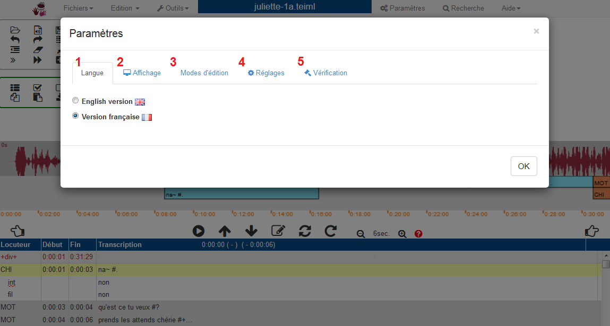
Les paramètres suivants sont modifiables :
| Paramètre | Descriptif | Localisation |
|---|---|---|
| Version | Deux versions sont pour le moment disponibles : Français et Anglais | Onglet |
| Visualisation de la partition | Coché par défaut | Onglet |
| Visualisation du signal sonore | Coché par défaut | Onglet |
| Affichage des numéros en début de ligne | Par défaut ils ne sont pas affichés | Onglet |
| Affichage des noms des participants | A la place des codes | Onglet |
| Affichage des temps des alignements | C'est-à-dire les temps de début et de fin, coché par défaut | Onglet |
| Modes d'édition des zones d'affichage | 3 modes sont disponibles : Libre, Contrôle (Standard), Bloqué | Onglet |
| Réorganisation dynamique des lignes | Onglet |
|
| Format pour les repères temporels | Renseigné par défaut en h:mm:ss | Onglet |
| Nombre de chiffres pour les millisecondes | De 0 à 3 | Onglet |
| Valeur de retour en arrière | (Pour le raccourci clavier : ) en ms | Onglet |
| Valeur de saut en avant | (Pour le raccourci clavier : ) en ms | Onglet |
| Vérification de la transcription lors de la sauvegarde | Coché par défaut | Onglet |
| Nombre de versions précédentes conservées lors de la sauvergarde | De 1 à 3 | Onglet |
Lorsqu'on passe la souris sur un paramètre, une bulle d'information apparaît pour rappeler sa fonction principale, ainsi que son raccourci clavier éventuel associé.
8.3. Vérification de la transcription
Dans le menu
Pour en savoir davantage à propos du format TEI :
La vérification permet d'attirer l'attention de l'utilisateur à propos d'erreurs de formats de type structurel
(non renseignement d'un locuteur, d'une structure),
de type temporel (temps non renseignés ou superposés) etc.
Dans certains cas, l'erreur est soulignée aux yeux de l'utilisateur par un message s'affichant 5 secondes.
Fonctionnalités
9.1. Outil d'export
Les options d'exports sont disponibles dans le menu
Il est possible d'exporter la totalité du fichier ou seulement une sélection.
9.2. Outil de recherche
L'onglet de recherche s'affiche sous forme de panneau. On y accède par plusieurs moyens :
- en ouvrant le menu
RECHERCHE - en cliquant sur l'icône de la barre d'outils
- via le raccourci clavier : Ctrl F
Il est possible d'effectuer plusieurs types de recherche dans le fichier courant :
- Rechercher un mot ou une chaîne de caractères :
- dans le champ Locuteurs
- dans le champ Transcription
- Remplacer le résultat de la recherche
- Montrer les locuteurs ou les tiers :
- dans le champ Locuteurs (permet d'afficher seulement le locuteur/la tier sur laquelle on travaille)
- dans le champ Transcription (permet d'afficher toutes les mentions d'un locuteur/une tier dans la transcription)
- Cacher les locuteurs ou les tiers :
- dans le champ Locuteurs (permet de cacher les locuteurs/tiers désirés)
- dans le champ Transcription
- Aller à un numéro de ligne ou le raccourci clavier : Ctrl L
- Aller à un repère temporel ou le raccourci clavier : Ctrl T
9.3. Outil d'aide contextuelle
10. Macros
Les macros permettent d'insérer rapidement une suite de caractères au choix de l'utilisateur. Il est possible de définir autant de macros que désiré. Ces macros peuvent être associées à des touches du clavier pour faciliter leur usage rapide. Des sous-ensembles de macros spécifiques aux formats CLAN et IRCOM/ORAL sont prédéfinis pour créer rapidement des macros adaptées à ces formats. La création de macro de toute forme reste possible dans tous les cas.
10.1. Création/édition des macros
Les macros peuvent être créées et éditées pour contenir toutes sortes de caractères. Il existe des outils permettant de créer des macros semi-prédifinies correspondant au type d'édition souhaitée:
- Mode CHAT (macros permettant de générer facilement des codes CHAT - cf. childes.talkbank.org)
- Mode XML TEI (macros permettant d'utiliser les codes CORLI/IRCOM) et générer automatiquement une sauvegarde au format XML TEI.
La création, l'édition et l'insertion de macros sont disponibles dans le menu
Création de macro
Il est conseillé de suivre dans l'ordre les opérations suivantes.
- Sélectionner "nouvelle macro" dans le champ "Trouver"
- Choisir un nom non encore utilisé dans le champ "Nom pour la nouvelle macro" (c'est-à-dire un nom qui ne figure pas dans la liste "Trouver")
- Sélectionner un type de macro dans "Type". Les valeurs de types de macro prédéfinies dépendent du mode d'édition (CHAT/TEI/autre). Tous les modes comprennent la macro "Any value" qui permet d'insérer tout type de caractères sans contraintes.
- Le contenu de chaque macro est défini par trois éléments:
- Le type de macro. Il contient les valeurs prédéfinies. Par exemple, pour un silence de longueur quelconque au format CHAT, il s'agit de "(" et de ")". Le type de macro "Any value" ne rajoute aucun élément.
- La valeur de la macro: c'est le premier argument (optionnel) de la macro. Cette valeur est ajoutée au milieu de la macro (selon le type prédéfini). Par exemple, pour un silence de longueur quelconque au format CHAT, cette valeur pourra être celle de la longueur d'un silence. Associée à "(" et de ")", elle permettra de créer la valeur finale. Pour le type de macro "Any value" cette valeur correspond exactement à l'élément ajouté.
- Certaines macros prédéfinies contiennent deux emplacements de valeur potentiels. Le champ complément (deuxième argument) permet de remplir le deuxième emplacements.
- ATTENTION La frappe des caractères dans le champ des macros ne profite pas des raccourcis automatiques de TRJS (par exemple pas d'association entre touches et caractères phonétique). Ceci a l'avantage de permet d'insérer dans une macro tous les caractères permis par le système y compris tous les caractères unicode (voir https://en.wikipedia.org/wiki/Unicode_input). L'inconvénient est qu'il n'est pas possible de profiter des raccourcis TRJS à l'intérieur de la préparation des macros. Pour contourner cette difficulté, il est possible de préparer l'édition de macro dans une ligne normale d'édition de TRJS (dans la fenêtre principale) puis de copier cette valeur dans le presse papier avec CTRL+C et enfin de la recopier dans l'édition de macro avec CTRL+V.
-
- Donc selon le type de macro, le type, puis le champ "Valeur" et enfin optionnellement le champ "Complément" seront intégrés dans la macro
- Le type CHAT permet d'insérer facilement des codes CHAT.
-
- Any value: insère l'argument "Valeur".
- Repetition: insert [/] - no argument.
- Le type XML TEI permet d'insérer facilement des codes IRCOM/CORLI qui seront automatiquement convertis au format XML/TEI. De plus ce mode d'édition permet d'insérer des codes XML quelconques. Le champ "Valeur" code en général le contenu du code pour la transcription de l'oral, le champ "complément" code le sous-type de champ quand c'est nécessaire.
-
- Any value: insère l'argument "Valeur".
- Noise: insert [%1 /%2 /N] - Valeur est inséré à la place de %1, Complément à la place de %2.
- Event: insert [%1 /%2 /E] - Valeur est inséré à la place de %1, Complément à la place de %2.
- Abbreviation: insert {%1 /%2 /A} - Valeur est inséré à la place de %1, Complément à la place de %2.
- Variante: insert {%1 /%2 /VAR} - Valeur est inséré à la place de %1, Complément à la place de %2.
- Language: insert { /%2 /LG:%1} - Valeur est inséré à la place de %1, Complément à la place de %2.
- Comment: insert [%1 /%2 /COM] - Valeur est inséré à la place de %1, Complément à la place de %2.
- Vocal: insert {%1 /VOC} - Valeur est inséré à la place de %1.
- Short pause: insert # .
- Middle pause: insert ## .
- Long pause: insert ### .
- Very long pause: insert #%1# - Valeur est inséré à la place de %1.
- Lexical: insert {%1 /%2 /LEX} - Valeur est inséré à la place de %1, Complément à la place de %2.
- Entities: insert {%1 /%2 /NE} - Valeur est inséré à la place de %1, Complément à la place de %2.
-
- Une macro peut être associé à une combinaison de touche du clavier en cliquant sur "Shortcut" Cela ouvre une fenêtre qui contient les champs suivants:
-
- Nom de la macro (non modifiable ici)
- Préfix suivi d'une liste à choix déroulants: Aucun (--), F1, ou F2. La frappe d'un préfixe ne s'accompagne d'aucune touche CTRL/CMD/ALT/SHIFT
- CMD/CTRL: si coché alors cette touche devra ête activée après la frappe du préfixe.
- ALT: si coché alors cette touche devra ête activée après la frappe du préfixe.
- SHIFT: si coché alors cette touche devra ête activée après la frappe du préfixe.
- Valeur de la clé de clavier à actionner.
- Faire ok pour valider, annuler pour abandonner.
- Si la combinaison de touche choisie est déjà occupée, un message s'affichera et vous donnera la possibilité d'annuler ou de confirmer.
- La macro créée peut être sauvegardée pour un usage futur en cliquant sur "Sauver".
- La macro créée peut être insérée directement dans le document là où était le curseur en cliquant sur "Insérer".
- Cliquer sur OK permet de fermer la fenêtre d'édition de macro.
10.2. Utilisation des macros.
- Les macros peuvent s'utiliser soit en activant une combinaison de touche mémorisée, soit en ouvrant le menu macro.
- Choisir une des macros enregistrées en la sélectionnant dans la liste "Trouver". Les paramètres liés à la macro s'afficheront.
- Il est possible de modifier les paramètres de la macro affichée.
- Insérer la macro choisie en cliquent sur "Insérer". Les modifications éventuelles ci-dessus seront prises dans l'insertion de la macro. Les modifications ne seront pas conservées, sauf en cliquant sur "Sauver".
11. Format des transcriptions
11.1. Formats
Il existe plusieurs formats qui peuvent être utilisés pour la transcription des données orales. TRJS propose plusieurs modes d'éditions qui se traduisent par des différences dans le format des lignes de transcription principales. Ces modes ont des conséquences sur la nature des macros prédéfinies de l'utilisateur, sur la vérification de format des lignes principales, et sur la manière dont TRJS manipule les caractères < et >.
- Mode CHAT (format CHAT - cf. childes.talkbank.org) - les caractères spéciaux < et > sont codés comme des entitées XML.
- Mode XML TEI (format de réprésentation des codes IRCOM. Ce mode permet l'insertion de caractères < et > dans leur forme originale pour créer des balises XML à l'intérieur des transcriptions).
- Mode raw: aucune contrainte et vérification des lignes principales. Les caractères spéciaux < et > sont codés comme des entitées XML.
Le format se sélectionne en choisissant le menu "Tools" puis "Parameters" puis l'onglet "Vérification" puis enfin choisir le type de transcription (CHAT, XML TEI, None)
11.2. Contrôle des lignes principales
Quelques contrôles de format du contenu des transcriptions peuvent être réalisés en direct ou au moment de la sauvegarde des fichiers. Ces contrôles sont en fonction du type de format. Les contrôles qui portent sur les marques d'alignement sont toujours réalisés. Les contrôles qui portent sur le format des transcriptions sont réalisés en fonction du format de transcription choisi.
Le contrôle de la ligne courante se fait à l'aide de la touche ALT+e. Un message signale l'erreur éventuelle et se manifeste aussi par la présence de croix autour du nom du locuteur. Si une correction est faite, l'affichage disparaitra. Si aucune correction n'est faite, les croix ne seront pas conservées lors de la sauvegarde du fichier. Il ne s'agit donc que d'une information visuelle.
11.3. Contrôle des liens temporels
Il est illogique d'avoir un alignement temporel qui en recouvre un autre pour le même locuteur. De ce fait, lorsque de tels cas sont rencontrés, le nom du locuteur est indiqué par l'affichage de croix autour du nom du locuteur.
11.4. Contrôle des transcriptions
Une erreur sur le format CHAT ou sur l'utilisation des caractères < et > amènera un message d'erreur. Egalement, le nom du locuteur est indiqué par l'affichage de croix autour du nom du locuteur.
11.5. Equivalences entre format IRCOM et format XML TEI
Les codes au format IRCOM sont automatiquement convertis au format de codage XML TEI lors de la sauvegarde des données. Inversement, la lecture d'un fichier au format XML TEI générera les codes IRCOM.
- Liste des équivalences
- Noise: [A /B /N] - <incident type="noise" subtype="B"> A </incident>
- Event: [A /B /E] - <incident type="para" subtype="previous"> A </incident>
- Abbreviation: {A /B /A} - <choice><abbr type="acronym">A</abbr><expan>B</expan></choice>
- Variante: {A /B /VAR} - <choice><orig>A</orig><reg>B</reg></choice>
- Variante phonologique: {A /B /VARPHO} - <choice type="pho"><orig>A</orig><reg>B</reg></choice>
- Language: {B /LG:A} - <seg type="language" subtype="A">B</seg>
- API: {A /API} - <seg type="API">A</seg>
- Comment: [A /B /COM] - <incident type="comment" subtype="B"> A </incident>
- Vocal: {A /B /VOC} - <vocal type="B"/>>A</vocal>
- Gesture: [A /B /GES] - <kinesic type="B"/>>A</kinesic>
- Short pause: # <pause type="short"/>
- Middle pause: ## <pause type="long"/>
- Long pause: ### <pause type="verylong"/>
- Very long pause: #A - <pause type="chrono" dur="1.2"/>
- Lexical: {A /B /LEX} - <seg type="lexical" subtype="B">A</seg>
- Entities: {A /B /NE} - <rs type="entities" subtype="B">A</rs>
- Choice: {A,B,C,D /C} - <choice><seg>A</seg><seg> B</seg><seg> C</seg><seg> D</seg></choice>